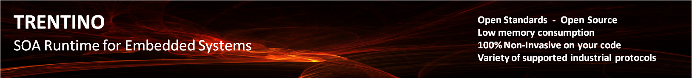

The Team
TRENTINO is currently developed by a small team of software engineers working at Siemens Corporate Technology.Contact
Get in touch with us! Either subscribe to our mailing list (user and devel) or post to our forum if you have questions or feedback. We warmy welcome every contribution!© The Trentino Group